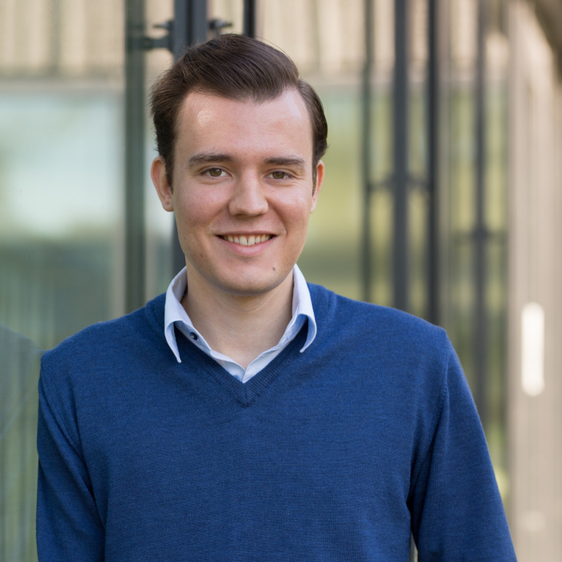
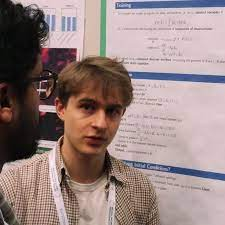
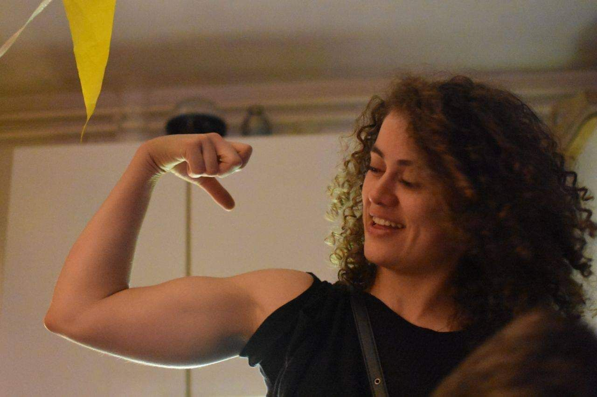

Organizers

Konstantin Rusch is a fourth-year PhD student in Applied Mathematics at ETH Zurich, supervised by Prof. Dr. Siddhartha Mishra, with a second affiliation at the EECS Department at UC Berkeley, supervised by Prof. Dr. Michael Mahoney. His main research interest is in combining physics with machine learning. Thereby, he focuses on physics-inspired machine learning, which can be seen as leveraging structure of physical systems to construct novel machine learning algorithms with a better inductive bias. Moreover, he works on advancing methods from numerical analysis with machine learning to solve problems in computational science and engineering.
Aditi Krishnapriyan is an assistant professor at UC Berkeley. She received her PhD from Stanford University, where she was funded by the Department of Energy Computational Science Graduate Fellowship. Her main research interests are in developing new physics-informed machine learning methods for a range of science and engineering disciplines including molecular dynamics, fluid mechanics, and climate science. She is also interested in using insights from statistical physics to inform neural network understanding.
Patrick Kidger is a mathematician at Google X. He received his PhD from the University of Oxford, under the supervision of Prof. Terry Lyons. His main research interests are neural differential equations, and the numerical analysis of differential equations. He is the author of numerous popular open-source PyTorch/JAX software packages, for neural networks (Equinox), differential equations (Diffrax, torchsde), or rich type annotations for tensors (torchtyping, jaxtyping).
Benjamin Chamberlain is a staff ML researcher at Twitter where he works on graph machine learning. He was previously the Head of Machine Learning at ASOS.com and was named one of Corinium’s Top 50 Innovators in data and analytics in the UK in 2019. He did his PhD with Marc Deisenroth at Imperial College London in large scale graph machine learning and his first degree is from the University of Oxford in physics. He has published on subjects that include graph neural networks, social network analysis, recommender systems, natural language processing and the design of online controlled experiments. Ben has over ten years of industry experience and has previously worked with the British intelligence services (GCHQ and MI6), British military (the SAS, Ministry of Defence and the Defence Science and Technology Lab) and the former investment bank, Lehman Brothers . Outside of work, Ben enjoys playing and watching rugby and tennis.

Emmanuel de Bézenac is a postdoctoral researcher at ETH Zurich, supervised by Prof. Dr. Siddhartha Mishra. He received his PhD at the University of Sorbonne, under the supervision of Prof. Patrick Gallinari. His research is focused on two main aspects. The first consists in modelling physical phenomena using deep learning as means to uncover hidden laws and accelerate numerical simulations. To this extent he has made several contributions, proposing novel methods to integrate physical priors into deep learning systems. The second aspect focuses on how insights and tools from physics can be applied to deep learning, to gain a better understanding and develop novel algorithms. In particular, he has connected generative models to dynamical systems, making them akin to theoretical study.

Elise van der Pol is a Senior Researcher at Microsoft Research Amsterdam, working on reinforcement learning and deep learning for molecular simulation. She’s worked on symmetry, structure, and equivariance in single and multi-agent reinforcement learning and machine learning. Elise was an invited speaker at the BeneRL 2022 workshop and the Self-Supervision for Reinforcement Learning workshop at ICLR 2021. She was also a co-organizer of the workshop on Ecological/Data-Centric Reinforcement Learning at NeurIPS 2021. Before joining MSR, she did a PhD in the Amsterdam Machine Learning Lab, working with Max Welling. During her PhD, she spent time in DeepMind’s multi-agent team.